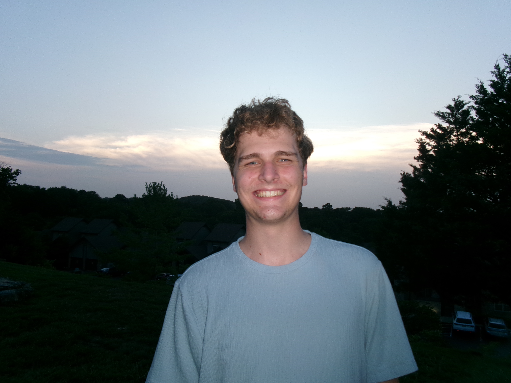

You might find the key to life here...
Hello, my name is Kyle Teszlewicz! I am 21 years-old, grew up in Lansing Michigan with my parents and 1 sister, and currently attend Michigan State University. I went to high school at Dewitt High School graduating in the class of 2022.
Growing up and still currently, I loved to do the following things-
My first job ever was a dishwasher at a local bar that was own by one of my good friends paretns. I worked there for around 2 years but decided it wouldn't really work out as I was going into college. Since then, I have worked at the Michigan Department of Attorney General as an IT student. This job opportunity has been a true blessing in my life and I will forever be grateful for the amount of skills and lessons I have learned throughout my time working with this department.
I originally started my journey through college at Lansing Community College in 2022. I attended college there for 2 years before transferring to Michigan State Univsersity in the Fall of 2024 with a major in Supply Chain Management. After 1 semester I found out that this major wasn't quite for me and changed majors to Information Science with a focus in Media and Information.
I plan to graduate college following the Spring 2026 semester. I will then move to Illinois to live with my girlfriend as she wraps up her last year of college next year. In the future I would love to possibly still work in some kind of government work or sustainbale IT work.